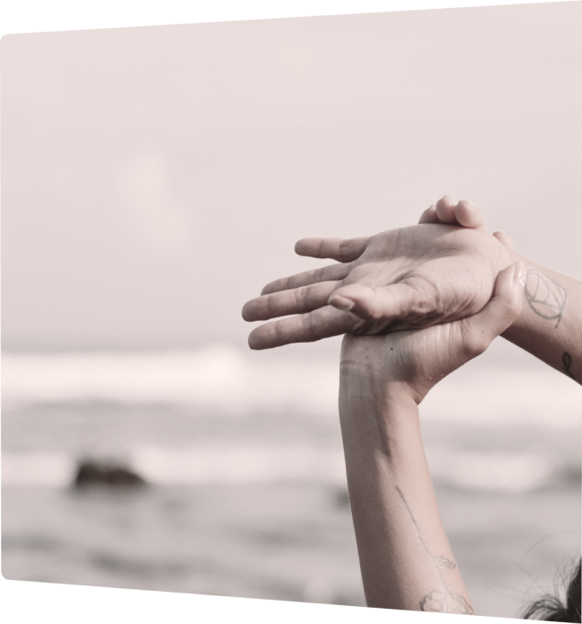
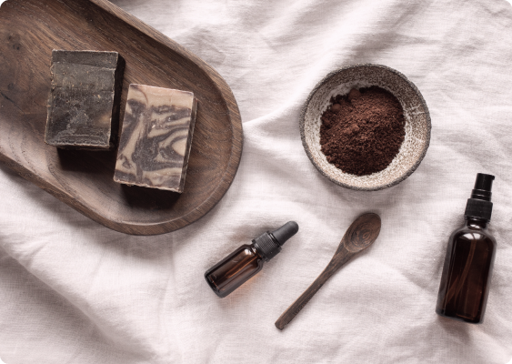
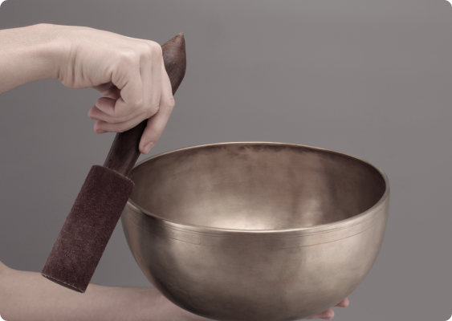
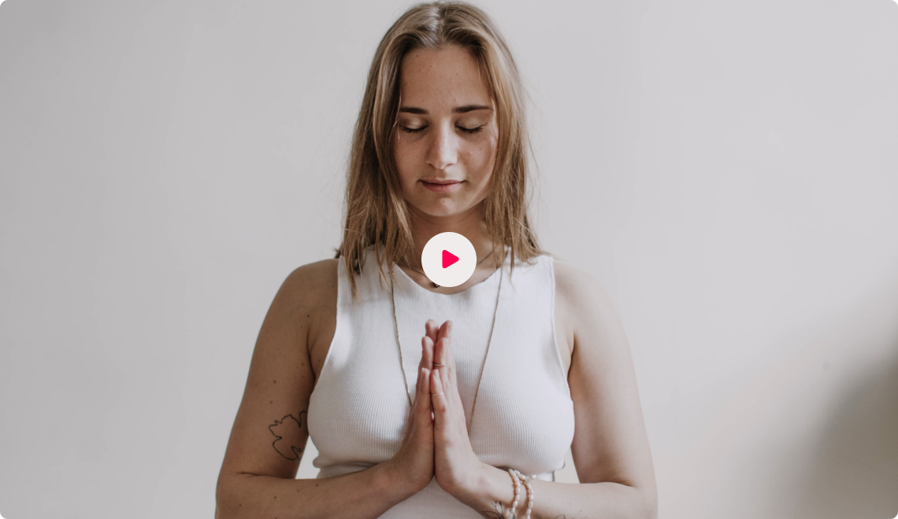
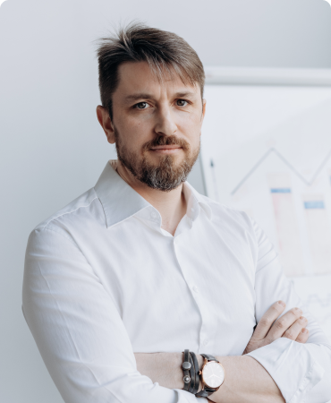
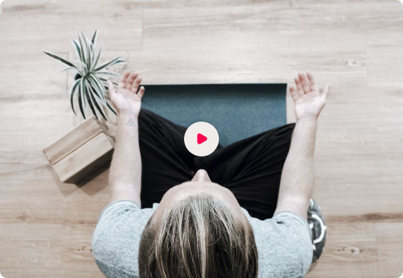

We all want to be the best version of ourselves but as people, we often experience traumas and struggles that keep us from being our best.
You are a powerful spiritual being having a human experience. We designed the Sanctuary so you can remember who you really are and you can create your own heaven on earth. Live life at your best.

Retreat Experience

Experience God's Natural Medicine
The Loving Kindness Sanctuary is a spiritual healing center that combines the best of science-backed psychedelic medicine and indigenous healing practices.
Our Approach to Healing
Heal yourself to heal the world. Our personalized healing approach empowers you to learn how to heal yourself.

Testimony

Healing Team
We work with indigenous Peruvian Shipibo female and male healers, and have decades of combined experience working at top-rated ayahuasca retreat centers in the Peruvian Amazon.
Mary Vasquez
Master Healer
Vian Morales
Master Healer
Olga Urquia
Master Healer
Indigenous Board of Directors
We are grateful to have the support and guidance of renowned luminaries in the field of plant medicine, psychedelic science, shamanism, psychology, and healthcare. Our board of advisors help guide our mission, ethos, programming, and contributions to the global renaissance of holistic healing.

Dr. Gabor, MD
Dr. Sharon, PhD
Dr. Clancy, PsyD
Retreat Itinerary
We believe in the rights of Mother Earth, and in protecting the practice of Mother Earth-based spiritual traditions, ceremonies, and sacred indigenous natural medicines of Mother Earth. We believe in sharing the True Original Eucharist of Jesus Christ with the people. What is of the Earth is our holy sacrament, and we retain the rights as children of God and citizens of the world to use plant medicines as tools for the benefit of our physical health, spiritual growth, and personal evolution.
Book Now
Download Book
The Psychedelic Origin of Religion & The True Original Teachings of Jesus
We teach and share the true original teachings of Master Yeshua and all the Bodhisattvas.
Original Teachings
The True Original Teachings of Jesus
We teach and share the true original teachings of Master Yeshua and all the Bodhisattvas.

Plan Your Visit
Experience the Healing Power of the Original Sacrament of Christ
The Loving Kindness Sanctuary is a spiritual learning and healing center focused on providing the community with service, education, spiritual fellowship, healing practices, guidance, and plant medicine ceremonies.
We believe in the rights of Mother Earth, and in protecting the practice of Mother Earth-based spiritual traditions, ceremonies, and sacred indigenous natural medicines of Mother Earth. We believe in sharing the True Original Eucharist of Jesus Christ with the people. What is of the Earth is our holy sacrament, and we retain the rights as children of God and citizens of the world to use plant medicines as tools for the benefit of our physical health, spiritual growth, and personal evolution.
Integration
Integration means taking the knowledge and lessons learned during your ceremony experience and putting it into practice in your life. At the Sanctuary, there is a strong focus on the integrative work that starts during your retreat and continues for the rest of your life. We work with skilled integration specialists who have a foot in both Indigenous and Western medicine and can help you prepare for, maintain, and enhance the outcomes of the retreat experience. By doing the necessary healing work during your stay and understanding the tools and practices that can help maintain that work, you can open to the truth of who you are, what you want, and most importantly, how to get there.
Council of Elders
Under the guidance of the Indigenous Leaders and Healers from around the world, we combine plant medicine ceremonies, the western care model, supportive embodiment practices, and a unique integration program to empower each guest for their long term spiritual health.